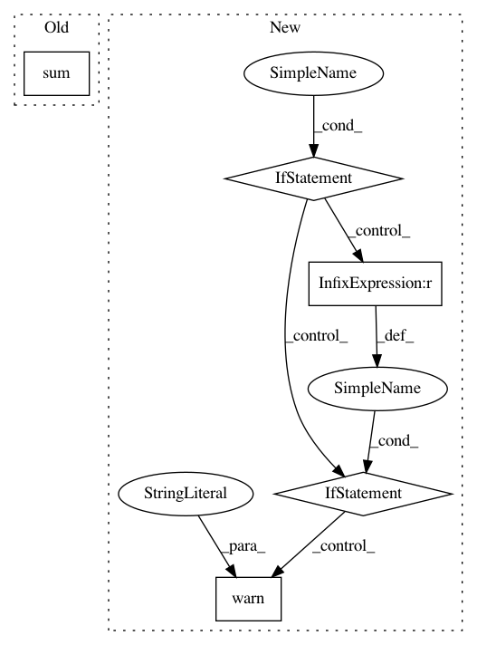

48282d57a0f11094d71c7310898ab347e6b847b3,nilearn/signal.py,,_standardize,#Any#Any#Any#,23
Before Change
// remove mean if not already detrended
signals = signals - signals.mean(axis=0)
std = np.sqrt((signals ** 2).sum(axis=0))
std[std < np.finfo(np.float).eps] = 1. // avoid numerical problems
signals /= std
return signals
After Change
copy of signals, standardized.
if standardize not in [True, False, "psc", "zscore"]:
raise ValueError("{} is no valid standardize strategy."
.format(standardize))
if detrend:
signals = _detrend(signals, inplace=False)
else:
signals = signals.copy()
if standardize:
if signals.shape[0] == 1:
warnings.warn("Standardization of 3D signal has been requested but"
" would lead to zero values. Skipping.")
return signals
elif (standardize == "zscore") or (standardize is True):
if not detrend:
// remove mean if not already detrended
signals = signals - signals.mean(axis=0)
std = signals.std(axis=0)
std[std < np.finfo(np.float).eps] = 1. // avoid numerical problems
signals /= std
elif standardize == "psc":
mean_signal = signals.mean(axis=0)
invalid_ix = mean_signal < np.finfo(np.float).eps
signals = (signals / mean_signal) * 100
signals -= 100
if np.any(invalid_ix):
warnings.warn("psc standardization strategy is meaningless "
"for features that have a mean of 0 or "
"less. These time series are set to 0.")
signals[:, invalid_ix] = 0
return signals
In pattern: SUPERPATTERN
Frequency: 3
Non-data size: 5
Instances
Project Name: nilearn/nilearn
Commit Name: 48282d57a0f11094d71c7310898ab347e6b847b3
Time: 2019-03-25
Author: gilles.de.hollander@gmail.com
File Name: nilearn/signal.py
Class Name:
Method Name: _standardize
Project Name: has2k1/plotnine
Commit Name: 035083f62466d569f2fbc576c887cf770bc5b057
Time: 2019-09-24
Author: has2k1@gmail.com
File Name: plotnine/stats/stat_density.py
Class Name:
Method Name: compute_density
Project Name: rtqichen/torchdiffeq
Commit Name: 47ba6dedb917847460b098c5f2b776a4c8bd0c1b
Time: 2021-01-05
Author: rtqichen@gmail.com
File Name: torchdiffeq/_impl/adjoint.py
Class Name:
Method Name: odeint_adjoint